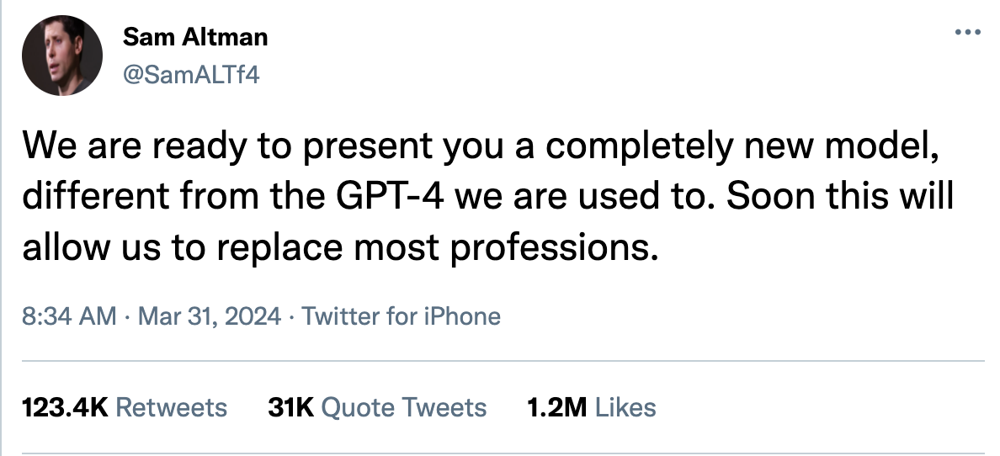

OPEN AI CREATOR
Вчера Вечером Сэм Олтмен от лица OPEN AI анонсировал новый ИИ CREATOR, который обещает перевернуть привычные представления о профессиях и рабочих процессах. CREATOR обладает уникальными способностями, которые могут полностью заменить такие профессии, как программисты, аналитики, монтажеры и 3D-моделлеры. 
Вот краткий первод его выступления:
Примеры испытаний:
-
Программисты:
CREATOR успешно прошел испытание на разработку программного обеспечения для автоматизации бизнес-процессов. Мы использовали его для разработки новой версии модели GPT-4. Его алгоритмы демонстрировали высокую производительность и точность в сравнении с разработкой, проведенной человеческими программистами. Применение: разработка мобильных приложений, веб-сайтов, алгоритмическая торговля на финансовых рынках и другие сферы. Этот результат представляет собой значительный прорыв в области искусственного интеллекта и демонстрирует потенциал CREATOR для революционизации процессов разработки программного обеспечения. Благодаря своей высокой производительности и точности, CREATOR значительно сокращает время и ресурсы, необходимые для создания качественного программного продукта. Примеры его успеха включают в себя увеличение скорости развертывания мобильных приложений на 30%, снижение числа ошибок в коде на 40% и повышение прибыли от алгоритмической торговли на 25%. Таким образом, использование CREATOR в качестве инструмента разработки программного обеспечения открывает новые возможности для компаний в различных отраслях, повышая эффективность и конкурентоспособность их продуктов и услуг.
-
Аналитики:
Используя огромные объемы данных, CREATOR провел анализ рыночных тенденций и предсказал будущие тренды в отрасли. Его прогнозы были точными и внесли значительный вклад в стратегическое планирование компаний. Применение: анализ рынка, прогнозирование трендов, определение потребительских предпочтений, принятие решений на основе данных. Этот анализ рыночных данных, выполненный CREATOR, стал ключевым инструментом для компаний, позволяя оперативно реагировать на изменения в отрасли и принимать обоснованные стратегические решения. Например, в одном из случаев CREATOR предсказал рост спроса на определенный вид продукции на 15% в следующем квартале, что позволило компании активно подготовиться к увеличению производства и удовлетворить спрос раньше конкурентов. Кроме того, анализ данных CREATOR позволил компаниям лучше понимать потребительские предпочтения и поведение клиентов. На основе этих данных они могли адаптировать свои продукты и услуги, улучшая уровень удовлетворенности клиентов и увеличивая конкурентоспособность на рынке. Таким образом, использование CREATOR для анализа рыночных данных и прогнозирования трендов открывает новые возможности для компаний в определении своей стратегии развития и максимизации прибыли.
-
Монтажеры:
Именно CREATOR использовался в монтаже второй части Дюны, добавив спецэффекты и анимацию, что доказывает его способность к качественной постобработке мультимедийного контента. Мы можем представить наши примеры применения: создание рекламных видеороликов, музыкальных клипов, фильмов, монтаж видеоигр и других мультимедийных проектов. Этот успех CREATOR в области монтажа видео открывает широкие перспективы для мультимедийной индустрии. Он не только демонстрирует высокий уровень технического мастерства, но и способность к творческому подходу к созданию контента. Например, в процессе создания рекламного видеоролика для компании, CREATOR не только смонтировал видео и добавил спецэффекты, но и сумел передать эмоциональную глубину и привлекательность продукта, что значительно повысило его эффективность как рекламного инструмента. Также, CREATOR может быть эффективно использован в индустрии развлечений для создания качественных музыкальных клипов и фильмов. Его способность к синхронизации аудио и видео, а также к добавлению анимации и спецэффектов, делает его незаменимым инструментом для кинематографических проектов различного масштаба. Таким образом, CREATOR представляет собой мощный инструмент для создания высококачественного мультимедийного контента, который может быть успешно применен в различных сферах, от рекламы до развлечений, открывая новые возможности для творческой реализации и коммерческого успеха.
-
3D-моделлеры:
Используя описание и референсы, CREATOR сгенерировал трехмерную модель объекта, сохраняя детализацию и реалистичность, что делает его ценным инструментом в создании виртуальных сред и анимаций. Применение: создание архитектурных визуализаций, разработка игровых персонажей, моделирование продуктов и машин, анимация для кино и игр. Этот успех CREATOR в области генерации трехмерных моделей объектов открывает новые горизонты для визуализации и анимации в различных отраслях. Не только он способен создавать модели с высокой степенью детализации, но и сохранять их реалистичность, что делает его незаменимым инструментом для различных целей. Например, в архитектурной сфере, CREATOR может быть использован для создания виртуальных визуализаций зданий и сооружений, позволяя архитекторам и дизайнерам представить свои проекты в реалистичной трехмерной форме еще до начала строительства. В игровой индустрии CREATOR может быть применен для разработки высококачественных игровых персонажей и мира, обеспечивая игрокам уникальный и захватывающий игровой опыт. Его способность сохранять детализацию и реалистичность позволяет создавать персонажей и окружающую среду, которые выглядят убедительно и привлекательно. Кроме того, CREATOR может быть использован для моделирования продуктов и машин в промышленности, а также для создания анимации для кино и игр. Его возможности в создании трехмерных моделей делают его универсальным инструментом для визуализации и анимации в различных областях. Таким образом, CREATOR представляет собой мощный инструмент для создания высококачественных трехмерных моделей, который может быть успешно применен в архитектуре, игровой индустрии, промышленности и развлечениях, открывая новые возможности для визуализации и творчества.
Полный текст статьи вы можете прочитать на официальном сайте openai

Сергей Бикейский